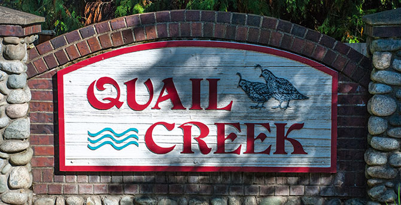

Welcome to the Neighborhood!
We're located in the Ames Lake area of Redmond. Here you can find our
HOA documents, links to local resources,
and information about the HOA itself.
Homeowners Annual Meeting
Sunday, December 17th, 2017
Time: Meeting starts at 4:00pm, followed by snacks & drinks
Place: The Hollasch’s — 27928 NE Quail Creek Dr (425-417-4130)
Meeting Agenda
- Introduce new neighbors
- Front entrance irrigation issues
- Garbage cans
- Web site
- 2017 financial report
- Proposed 2018 budget & dues increase
- Board member candidates introduction
- Election of new QCHOA board officers
If you would like anything specific to be covered on the agenda, please send us a note by
December 10th. If you have any questions, please do not hesitate to contact any member of the
board directly or send us an e-mail. We hope to see you at the meeting.
Sincerely,
The QCHOA Board of Directors (qchoaboard@outlook.com):
- Steve Hollasch, President (425-417-4130)
- Erik Ploof, Vice President
- Francesca Moceri, Secretary
- Jennifer Kuhtz, Treasurer
- Andrew Schoenfeld, Board Member
- Amber Esquivel, Board Member